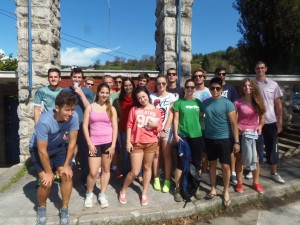

Uspješno provedene projektne aktivnosti Međunarodne razmjene mladih U zdravom tijelu zdrav duh!
U periodu od 20.9. do 28.9. uspješno su provedene projektne aktivnosti međunarodne razmjene mladih U zdravom tijelu zdrav duh! kojoj je u DugojResi bila domaćin Udruga za mlade Agora. U projektnim aktivnostima sudjelovalo je 23 sudionika, od toga 18 sudionika iz partnerskih organizacija iz Grčke, Italije, Poljske i Španjolske. Sudionici su upoznavali Dugu Resu i okolicu provodeći vrijeme aktivno i na otvorenom. Projektne aktivnosti su se sastojale od predavanja i radionica na temu ERASMUS+-a, Youthpassa, predavanja o povijesti, sadašnjosti i budućnosti Duge Rese u kontekstu sporta i rekreacije te aktivnog provođenja slobodnog vremena na otvorenom.
Ovim putem zahvaljujemo svim polaznicima i partnerima na projektu. Također zahvaljujemo svima koji su na neki način sudjelovali u projektu: Pučkom otvorenom učilištu Duga Resa, Kuglačkom klubu Duga Resa, Gradu i dogradonačelniku Zoranu Viloviću, Klubu podvodnih aktivnosti Vodomar, članicama KUD-u Sv. Juraj, Martinu Erdeljcu i Filipu Grgiću iz tae kwon do kluba Metalac, agenciji Kanuing Adventure, Udruzi Carpe Diem iz Karlovca, g. Vladimiru Šotu, članovima Odreda izviđača Spider, HPD-u Vinica, Mariju Valentiću te djelatnicima Hotela Duga Resa. Na medijskoj podršci zahvaljujemo Radio Mrežnici, TV 4 Rijeke i portalu DugaResa.net.
Ako ste po ulicama našeg grada i bliže okolice susretali grupicu mladih stranaca, to su bili naši dragi gosti. Nadamo se da ćemo biti domaćini još sličnih projekata te također biti gosti nekih od sličnih organizacija diljem Europe.


{kind=link}
{kind=link}
{kind=link}
{kind=link}